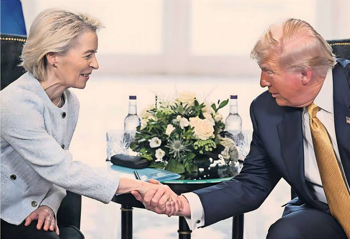

• EU to buy more US arms and energy • Accord with von der Leyen • Transatlantic strife averted
HENRY FOY — TURNBERRY
AIME WILLIAMS — WASHINGTON
ANDY BOUNDS — BRUSSELS
The US and EU have struck a trade deal that will impose 15 per cent tariffs on EU products, Donald Trump said yesterday.
The EU has agreed to spend hundreds of billions of dollars on additional American energy products and weapons as part of the deal, the US president said.
The agreement, which is set to avoid a transatlantic trade war, was struck during a meeting with European Commission President Ursula von der Leyen at Trump’s Turnberry golf resort in Scotland yesterday.
The meeting, which lasted around an hour, saw the sides agree a deal that was largely hashed out by negotiators earlier last week and met the EU’s key benchmark of a blanket 15 per cent tariff.
Earlier in the day Trump said he wanted to end the bloc’s “unfair” trade relationship with the US. “We should give it a shot,” Trump said ahead of the negotiations.
Sitting next to von der Leyen, Trump said the US-EU trade relationship was “unfair to the United States … a one-sided relationship”. He added: “Both sides want fairness.”
After reaching the deal, he said that “this is probably the biggest deal ever reached in any capacity, trade or beyond trade”.
Trump said the EU would spend an additional $750bn on US energy products, invest $600bn in the US and buy “a vast amount” in US military equipment worth “hundreds of billions of dollars”.
The US president said the US would put tariffs of 15 per cent on EU goods, including automobiles, in exchange for the bloc “opening up their countries at zero tariff”.
Speaking after the US president, von der Leyen said the new tariff rate would be “all inclusive”, and described the arrangement as a “good deal” that had been “tough” to reach.
Before the meeting von der Leyen said that the EU’s trade surplus in goods with the US, which hit almost €200bn last year, needed to be cut.
“We have to rebalance it,” she said.
The deal is a major victory for Trump, who has spent months forcing America’s allies into bruising negotiations by threatening steep tariffs.
But US trading partners have expressed concern that, even when they strike agreements with Trump to lower his tariffs, they face uncertainty over future levies on sectors including pharmaceuticals, chips and aerospace.
EU steel and aluminium imports are exempted from the deal. Trump said the levies, which he has set at 50 per cent for most countries across the world, would not be tackled until after an initial agreement with the EU, dashing the industries’ hopes for an early and low tariff quota.
Trump had threatened to impose 30 per cent tariffs on EU products imported into the US if no deal was finalised by August 1, a move that would almost certainly have sparked retaliation by the bloc and a transatlantic trade war.
The EU had prepared a retaliatory package of tariffs of up to 30 per cent against €92bn of US exports if it could not reach an agreement.
Speaking after the deal was announced, US commerce secretary Howard Lutnick said the US would unveil new tariffs on chips as a result of its national security probe into the sector in two weeks.